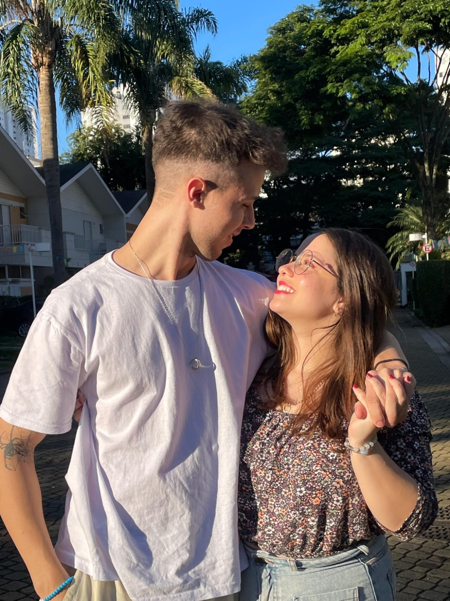
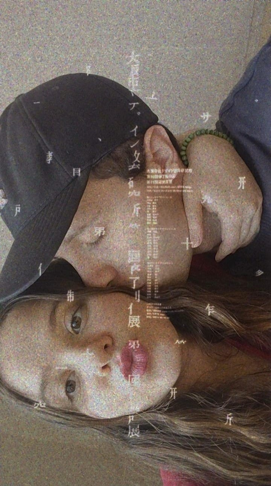
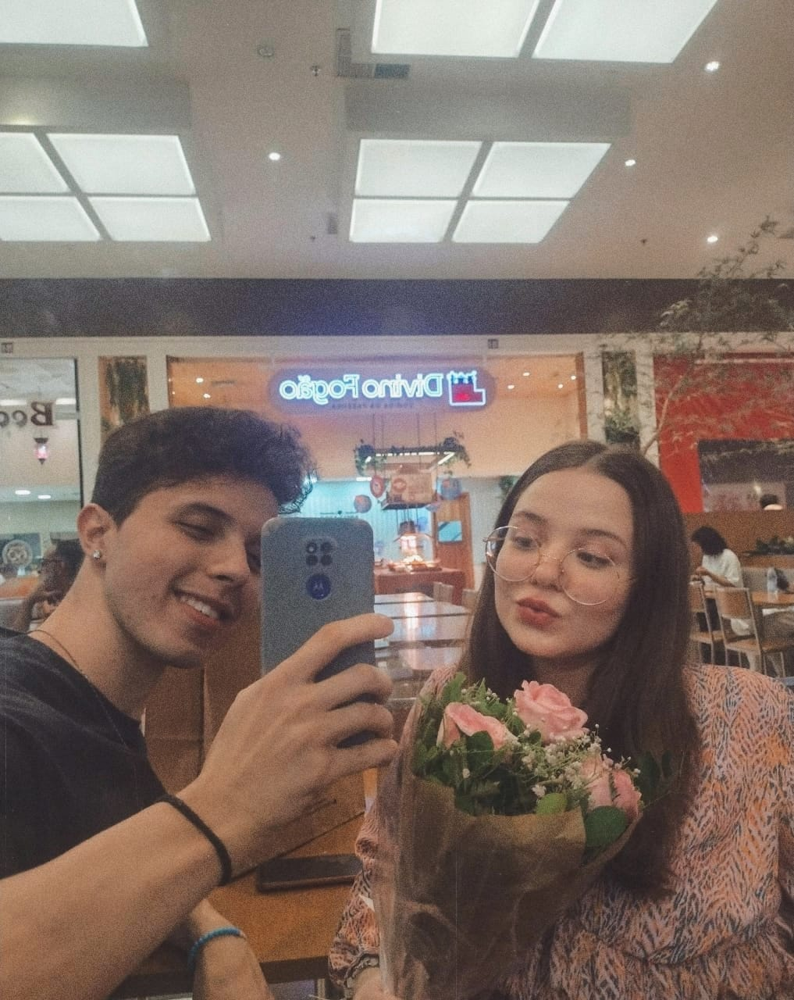
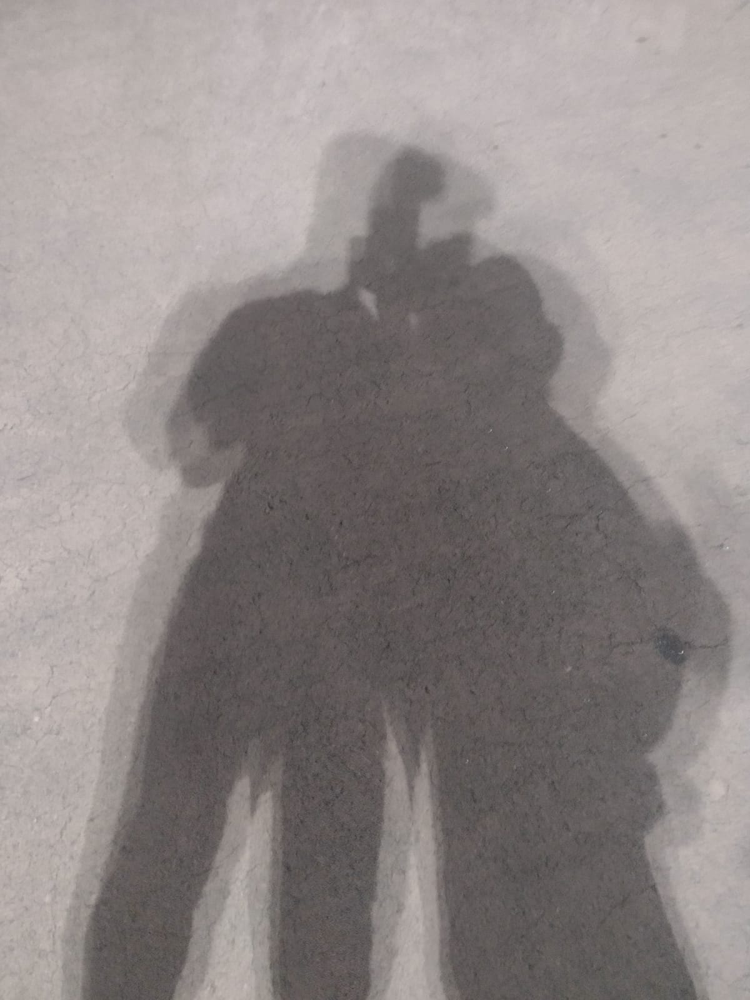
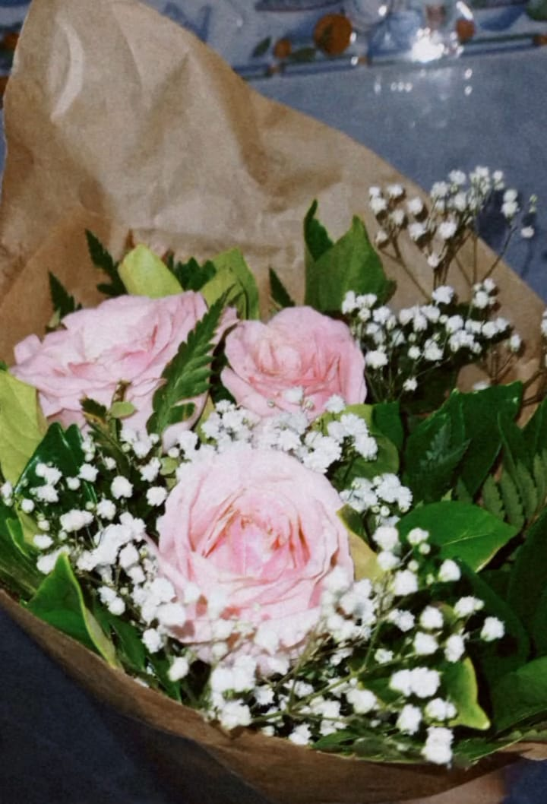
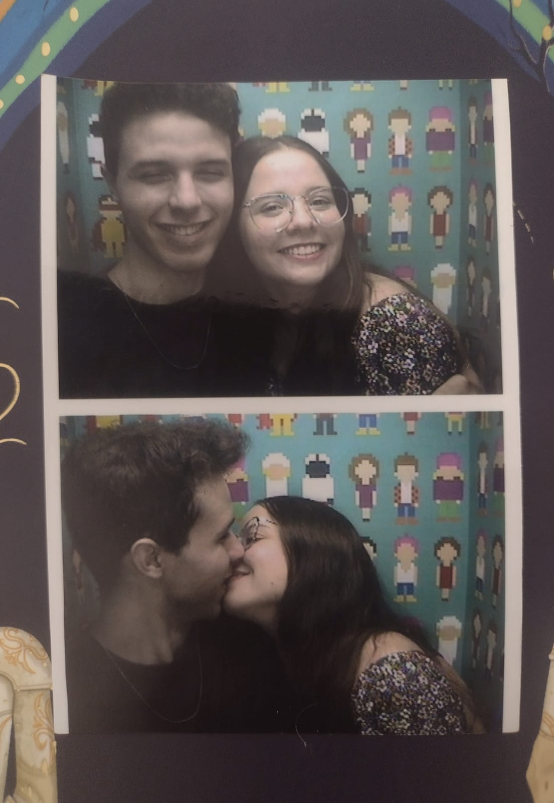

A nossa história
O começo de tudo:
Fala ae, meu nome é Kevin, e esse é site em específico é pra contar sobre como conheci essa garota que foi de uma Amiga para o amor da minha vida... Pra resumir melhor, nos conhecemos diretamente do instagram, onde eu tinha respondido o storys dela sobre a faculdade que ela estuda, pois eu estava procurando uma brecha para finalmente chamar ela para conversar.
Depois de um tempo fomos conversando sem parar, percebemos a nossa primeira semelhança ali de que nós NÃO CALAMOS A BOCA e amei isso nela, tava amando nossa interação e eu queria MUITO criar uma amizade muito boa ali.
O inicio da amizade:
No inicio da nossa amizade, eu mantia um lado bem discreto no que eu contava sobre mim e sobre minha vida para ela, por conta de traumas que acabei criando de antigas amizades e meu ultimo relacionamento, então eu tinha dificuldade querendo ou não de confiar nas pessoas, mas ELA, ela me passou um ar de confiança, uma aura de luz brilhava sobre ela que me deixava TÃO tranquilo que aos poucos eu fui me abrindo sem eu perceber...
O começo dos meus sentimentos por ela:
Uma coisa que eu fui percebendo ao longo da nossa amizade, é que eu estava começando a olhar ela com outros olhos (de uma forma boa), eu ficava admirando as fotos e videos que ela postava no insta e no tiktok, ficava ouvindo ela falar e ficava hipnotizado enquanto ela falava, sorria e ria que nem besta com nossas palhaçadas diarias.
E eu percebia que eu queria ouvir mais dela, saber como foi seu dia, sobre as tarefas que fez em casa, se ela comeu algo, como foi a aula dela, TUDO sobre ela... eu poderia ter ficado com medo por conta do que passei no ultimo relacionamento, mas por causa dela o meu medo foi se distanciando e foi se aproximando uma paixão contínua e que só aumentava!
O inicio do meu primeiro amor reciproco:
Aos poucos eu fui percebendo que ela também estava afim, com flertes sendo jogados pra e outros pra cá, a gente foi se revelando um pelo outro, mas antes de eu me arriscar eu queria ter mais certeza, fomos subindo bastante nesse sentimento e já não tinha mais como guardar...
Nosso primeiro encontro:
No nosso primeiro encontro, eu acabei criando coragem de chamar ela pra sair (com o meu melhor amigo do lado vendo meu nervosismo) eu acabei chamando nosso encontro de "rolê", vendo esse erro hoje em dia faz eu me sentir muito mal (desculpa amor, errei, fui mlk ksksks).
No nosso primeiro fomos ao shopping, e como ela estava morrendo com a dor da cólica, antes de encontrar ela eu fui comprar uma bolsa térmica de gel pra ela, para ver se ajudava em algo e ela amou, e ver que eu tinha ajudado fez eu me sentir muito feliz de ter comprado
Ficamos fofocando sobre nossa vida, rindo, comemos lanche no BK, fomos até o park de lá, andamos mais um pouco até o horário de irmos embora de lá.
Logo depois disso ficamos esperando o busão dela chegar no terminal antes de eu ir pegar o meu, fiquei escutando ela falar mais um pouco, e dessa vez eu deixei só ela falar, e cara, como é bom ouvir ela tagarelar sem parar, eu queria ficar ali ouvindo e sem ligar pro tempo em nossa volta...
Nosso primeiro beijo:
Logo depois o primeiro encontro, decidimos ter nosso segundo encontro logo num parque do bairro dela, e fomos lá mais para caminhar e conversar bastante. Mas antes disso eu queria fazer aquele dia ser o mais especial possível para ela, comprei flores (algo que eu nunca fiz na minha vida e sempre quis fazer esse ato de amor para alguém realmente especial, e essa pessoa especial era ela).
O sorriso dela de sem graça assim que nos encontramos e ela viu as flores, foi a coisinha mais fofa do dia, para ser sincero, lembro dessa carinha até hoje...
Assim que entramos no parque, sentamos numas mesinhas de lá, ficamos conversando mais, ela comentou sobre as músicas da Taylor Swift que ela TANTO AMA e eu tava amando escutar mais e mais a voz dela... Assim que a gente acabou levantando, andando um pouco mais e sentamos na área principal do parque e ficamos só em silêncio, acabamos nos abraçando, ela colocou a cabeça no meu ombro e eu não estava mais resistindo, eu fui me aproximando do rosto dela e nos beijamos ali msm, e foi um momento tão gostoso, pois meu corpo tremia e minha barriga estava tão fria que eu estava pensando que eu iria derreter ali msm.
Nosso 1*mês:
EM BREVE...